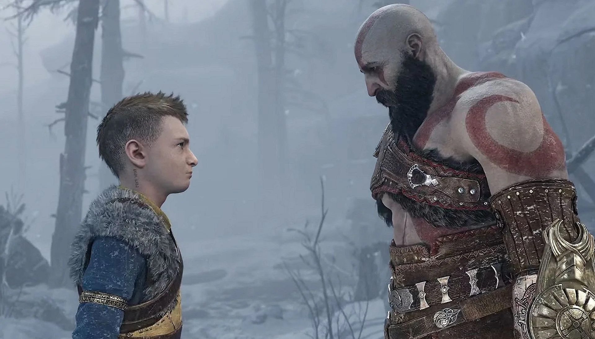

Об истории Атрея
Вернуться На главную
Создатель Кори Барлог

Атрей родился на 33 году знакомства и брака Кратоса и Фей. В основном его отец постоянно проводил время на охоте при этом оберегая растущего Атрея и его маму. Но прошло 11 лет,мальчик вырос и он должен был получить хоть какой-то опыт от отца, но Кратос как будто отталкивал от себя Атрея, не уча, не говоря с ним. Всём его умениям научила его мать. А во время выполнения последней просьбы его мамы у Атрея сложилось впечатление что, Он нужен Кратосу только тогда когда нужно что-то перевести, написать и т. д. Преграда, которая и так была между отцом и сыном превратилась а огромную стену. Отношение отца и сына изменилось после встречи с Магни и Моди....

После их встречи Атрей заболел, но по правде он на секунду впал в спартанскую ярость, его тело не выдержало этого и он грубо говоря впал вкому. Кратос нашел лекарство и отдал его для исцеления Атрея. Как говорила Фрейя:"Я смогу снять жар, а вот чтобы исцелится полностью он должен узнать о себе правду".Рассказав правду сыну всю правду он должен был исцелится, но чем дальше, тем хуже. Всё началось с вопроса:"Могу ли я превратился в кого-нибудь? ", а Кратос на это ответил:" Удиви меня, если превратишься". Пройдя дальше сын спас отца ценой памяти об его маме. Началом в его ублюдском проведении стали слова Кратоса: "Мы нечто большое , чем просто люди и на нас куда больше ответственности" . По пути на гору Атрей нагрубил Синдри, убил Моди, хоть и отец запретил ему, не слушался отца, пробудил Древнего, а главное подставил своего отца, выстрелив в него стрелой.

После серьезного разговора Атрей понял свои ошибки, с тех пор Кратос и Атрей работали в команде. Атрей мог называть Кратоса отцом, а Кратос Атрея сыном.
Автор этой статьи

Выполняя просьбу матери Атрей узнал что он полу великан, а его мать это великанша Лафей Справедливая. Переместимся в события во время Фимбулвинтера. Атрей подрос, Фрейя пытается во всю убить Кратоса. Волк Атрея Фенрир умер от болезни. Атрей в тайне от отца искал Тюра(Бог войны Скандинавской мифологии) чтобы избежать или предотвратить Рагнарёк. Об этом узнал не его отец а Один (Всеотец Девяти миров).
В один прекрасный день в дом к героям прибыл сначала Тор(Бог Грома Скандинавской Мифологии) а затем и Один. Сначала они хотели договориться, а потом получив отрицательный ответ на договор об мире, Тор напал на Кратоса, прося у него"Кровавый долг".В это время Один позвал Атрея в Асгард, согласился он или нет неизвестно до сихпор .Перед поисками Тюра они зашли и не надолго поселились в доме Синдри.Дальше из поиски Тюра привели их в Свартальхейм . В заброшенных шахтах они набрели на Эйнхерий, а затем и на Тюра. Атрею было мало Тюра в союзниках, именно поэтому он отправился в Мидгард за Фрейей , но перед этим зайдя к Мировому змею и тот ему сказал чтобы он отправился в Ярнвид. После этого Фрейя его чуть не убила и он вернулся домой ни с чем. Дальше они забрели в Альвхейм, где им нужно было святилище Гроа. Их путешествие сталось четным,потому что Тюр увидел что падёт лишь Асгард и его это смутило. После его разговора с отцом об дальнейшем , Атрей обиделся на него и пошёл спать по совету его лучшего друга Синдри. И сон привёл его в Ярнвид к великанше Ангрбоде , от которой он получил камни с душами великанов, но испоганив душу одного из великана он отдал душу какой-то змее и он отдал камни обратно. Стоит подметить что Атрей узнал,что в его ноже находиться чья-то душа. После некоторых событий в Ярнвиде, Атрей узнал об скорой смерти отца и теперь у него цель спасти его и ему нужно срочно домой. Из за ошибки он переместился в Мидгард а не в дом к Синдри, пытаясь вернуться обратно он наткнулся на его отца и тот его отругал за то что он пропал на 2 дня, но их разговор прервали скитальцы и подоспеашая валькирия Ванадис(Королева Валькирий) . Ванадис оказалась Фрейя и не убив Кратоса она приказала ему пойти с ним дабы освободиться от проклятия Одина. В Ванахейме Освободили Фрейю от проклятия они вернулись в дом Синдри. Снова накричав на сына и услышав что тот собрался в Асгард, все начали давить и отговаривать его, он не выдержал и сбежал. Пройдя немного по Мидгарду Атрей наткнулся на Воронов Одина, которые переместили его в Асгард. Поднявшись по стене Хримтура(сын великого каменщика Тамура) , он встретился с Хеймдаллем(Бог предвидения и реакции) . Сначала Хеймдалль хотел скинуть его с вершины стены, но когда Локи заговорил об том что его Один самолично пригласили его в Асгард, настроение Бога реакции тут же поменялось. Приведя Локи к "Великому Чертогу" , Хеймдалль напал на него. Из-за его безумной реакции Локи не как не мог его ударить, позже в их драку прервал Тор. Затем и подоспел Один. В чертоге Одина, тот рассказал Локи об его тайне, его стремлении . Но Локи сразу подметил что он не хочет предавать отца, а наоборот спасти его. Для помощи Всеотцу Локи нужно было собрать маску . По наводке Одина на пару с Тором они отправились искать первую часть маски. Пока Тор развлекался в Горниле , Локи напаролся на Ангрободу и святелище Сурта(Огненного Великана) Собрав обломок маски они вернулись в Асгард. Кратос желее об том что сын убежал по его вине, обратился за помощью к Фрейе, она и ведь знала Норн и как их найти. Фрейя привела к Норнам и те напророчили смерть Кратоса от рук Тора и Атрея от рук Хеймдалля. Вернувшись к гномам они объявили об вопросе #1 "Как убить Хеймдалля? " И гномы в этом помогли создав в Свартальхейме копьё Драупнир. Поиски обломков маски продолжаются. Следующая цель в Хельхейме. Локи обязан найти последний обломок маски вместе с Труд(дочь Тора) и Хеймдаллем. В начале пути Хеймдалль куда-то сбегает. Героям предстояло убивать скитальцев и искать обломок маски.Их поиски привели их к адскому псу Гарму,но Локи этого не знал, освободив пса и не найдя обломок с позором они вернулись в Асгард, а Локи отрёкся от поисков кусков маски и вернулся домой. А дома нежданчик:Скитальцы прошли через разлом прямо в мир между мирами. Этот разлом нужно было закрыть, но сначала для этого нужно перебить скитальцев . Атрей помогал как мог: бил врагов и закрывал разлом.

После закрытия разлома произошло воссоединение отца и сына. И теперь их задача остановить адского пса Гарма. Ратотоск(Хранитель мирового древа) дал возможность героям попасть в Хельхейм для выполнения поставленной задачи. Путешествуя по Хельхейму, герои обсуждали что Атрей делал в Асгарде и как он помогал Одину. В конце концов они нашли Гарма, идея победы над ним была просто убить его. К сожалению или к счастью, Гарм по просту отключился. Попытка номер два, но с тактикой Атрея. Тактика состояла в том чтобы воткнуть нож в голову Гарма, в котором находилась чья-то душа. Выполнив затеянное, Атрей и Кратос узнали что в ноже была душа Фенрира. Теперь Фенрир- большой пёсик. По пути домой, между героями начался разговор об доверии другу к другу. Они договорились, что когда к примеру перед Атреем встаёт какой либо вопрос, он должен подумать как бы сделал отец и наоборот. Вернувшись домой Фрейя узнала , что в Ванахейме её брату Фрейру (Бог мир, плодородия)нужна помощь. Герои пошли вслед за ней , да бы помочь. Пока Атрей помогал Фрейе, Кратос напоролся на Хеймдалля. С каким неистовым удовольствием Хеймдалль ворвался в бой. Копьё Драупнир и вправду не подведло, оно сделала Хеймдалля осязаемым для ударов Кратоса. В итоге Кратос задушил Хеймдалля и забрал Гьялархон . Кратосу было трудно понять что он вспомнил своё прошлое, дабы "спасти" Сына. В доме, герои обсудил план действий. Снова извинившись перед Синдри, Атрей предложил вернуться в Асгард и собрать маску. Кратос дал добро на выполнение этой задачи. Снова в лице Локи, он прибыл в Асгард, дабы собрать маску полностью. Теперь по наводке Локи путь лежал в Нифильхельм. Но для начала нужно было найти Тора, в этом ему помогла Труд. Найдя Тора, они отправились в путь. Пройдя сквозь монстров, Атрей собрал маску. Прибыл Один со словами:"Мы на пороге величия, Локи ".Затем подоспела Сиф(жена Тора) , она сказала:" Это отец Локи убил Хеймдалля , взять его".Но Один приказал не делать этого. Сиф подошла к Тору, напомнила ему кто убил его сыновей. После этого он набросился на Локи. Не без помощи Синдри, Атрей вернулся в мир между мирами с собранной маской. Теперь перед героями стоял вопрос:"Как дальше быть? ". Тюр сообщил что знает путь в Асгард. Но какой путь, он не сказал. Это смутило Брока, он повздорил с Тюром, что привело к раскрытию Тюра и смерти Брока.... Тюром всё это время был Один. Хоть его и окружили, он взял в заложники Атрея, взамен на свободу сына, он попросил маску. Один скрылся не получа маски, а Брока лежал бесдыханно, Синдри был очень опечален. После этого Синдри ушёл с телом Брока, а Кратос сказал возвращаться в Мидгард. Герои охотясь в утешение пришли в храм Тюра в Мидгарде, а там был Синдри. Атрей хотел извиниться, но Синдри не принял извинения. Он сказал очень много Атрею, а затем послал его на хрен. Возвратясь в дом Синдри они приняли решение как поступить. И они решили : раз в Рагнарёк падёт лишь Асгард, то нужно и другие миры созвать против него. Фрейр отправился в Альвхейм, Хильдисвини в Хельхейм с Мимиром, Фрейя в Ванахейм за Валькириями, а подоспевший Синдри в Свартальхейм. Армия это одно, но как провести эту Армию туда, им нужен Рагнарёк. А чтобы его устроить нужен Сурт и Синмара. Кратос и Атрей отправились в Муспельхельм за Суртом. Встретившись с ним, он сначала их отверг натравив на него древних, а затем все-таки согласился помочь героям.Чтобы призвать Рагнарек нужен был Первородный огонь и то что будет его сдерживать.Клинки Кратоса подошли, как нельзя кстати.По пути обратно на героев напали Христ и Мист.Эта драка послужила показателем сплочености главных героев.

Возвращение из Муспельхейма, стало началом "Войны миров".Это понимали все.Рагнарек,скитальцы,эльфы и гномы ждут того как Генерал кратос дунет в Гьялархон и начнет финальную битву.Храм Тюра это место с которого и начнется эта война.Кратос произнес речь,котороя послужила началом конца для Асгарда и новым началом для оставшихся миров.Дунув в рог все пути по другим отворились что привело основной отряд в Асгард.

В начале все рассредоточились:Фрейр вместе с эльфами отпрвились в атаку,Валькирии на поиски изменницы Гна(Фальшивая Королева Валькирий),Хильдисвинни и Атрей прикрывать Кратоса и Фрейу,пока те ждут подкркпления гномов.У башни Свартальхейма пришел только Синдри,но с предметами которые помогут попасть к Великому Чертогу.Воспользовшись этими предметами Атрей встретил Труд и Сиф.Труд согласилась идти дальше вместе с Кратосом и Атреем.Побеждая все у них на пути они почти дошли до Великого Чертога,но им помешал Тор, который напал на Кратоса.Сразившись, Кратос объяснил Тору что мы не враги.Тор почти принял их сторону,им помешал Один,который бесжалостно убил своего Сына.Подоспевший Атрей с Труд увидели истинное лицо Всеотца.Выкинув Труд,они начали драться.В этой драке хоть и доминировал Кратос,все равно Один их взял под контроль,но неожиданно вернувшийся Фрейя схватила его.С пафосом Фрейя приказывала ему сколониться,но Один не пальцем деланный и выбрался.И тут Атрей с маской попали к секрету Одина и перед Атреем вставал вопрос что делать надеть маску или уничтожить.Атрей выбрал второе, что справоцираволо Одина еще раз сразиться,но теперь он 1 против 3.Жестоко избив Одина,Атрей собрал его душу и закончил эту битву.Камень с его душой уничтожил Синдри и ушел.Фрейр сообщил что Рагнарек уже здесь и ему не терпиться разрушить Асгард.Потом произошел большой взрыв.
Большой взрыв перенес всех в Мидгард.Атрей ненадолго отключился.Очнувшись пошел искать отца.Во время поисков он узнал что Фрейр мертв.Труд,Сиф и друг Атрея выжили.Он нашел Ангрбоду с Фенриром,та ему рассказала об конце их с отцом истории.Пришедший Кратос на пару с Атреем последовали за Ангбодой.Она привела их к святилищу Лафей.От туда они узнали что их приключения были спронированы Фей.Обман Одина,Смерть Брока и Фрейра,разрушинные святилища и т.д.После осознания этого, Атрей сказал что ему как Локи придется искать великанов.Кратос ответил на это положительно, напомня про их договор.

Этот момент положил конец приключениям Атрея,но начал приключения Вонина-Йотуна Локи,который сразился в Рагнарек и победи.
Автор этой статьи
Об авторе

Виталий Стариков
Я Виталий Стариков.Я только начинаю писать статьи это первая,которую я написал.Пожалуйста отнеситесь с пониманием.Заранее Благодарю!